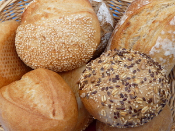

ⲁⲉⲓⲕ AF v ⲟⲉⲓⲕ.

| ⲙⲁⲛⲕⲁⲟ., ⲙⲁⲛϯⲟ., ⲙⲁⲛⲟⲩⲉϩⲟ. | bread storeroom, pantry1359 | Crum: 254b | |||||||
| ⲣⲟ. | become bread1360 | ||||||||
| ⲁⲧⲟ. | (adjective)without bread1361 | ||||||||
| ⲣⲉϥⲧⲁⲙⲓⲉⲟ. | baker1362 | ||||||||
| ⲥⲁⲛⲱⲓⲕ B | bread-seller1363 | ||||||||
| ― | dung [βολβιτος]1364 | ||||||||
ⲁⲉⲓⲕ AF v ⲟⲉⲓⲕ.
ⲟⲉⲓⲕ S, ⲁⲉⲓⲕ AA2F, ⲁⲓⲕ SaF, ⲱⲓⲕ B nn m, bread, loaf: Ge 14 18 SB, 2 Kg 6 19 SB, Pro 6 26 SAB, Is 30 20 SBF, Jo 6 32 SA2BF, Cl 34 1 A ἄρτος; Job 24 10 SB ψωμός, MG 25 209 B ψωμίον; Ac 7 11 S (B ⲥⲟⲩⲟ) χόρτασμα; Z 344 S ⲕⲟⲩⲓ ⲛⲟ. = MG 25 210 B ⲱ. παξαμᾶς; PS 370 S ϩⲉⲛⲟ. loaves, ShC 73 57 S ⲟⲩⲟ. ϣⲏⲙ, ϩⲉⲛⲕⲟⲩⲓ ⲛⲟ., Ep 540 S ⲟ. ⲱ & ⲟ. ϣⲏⲙ, BM 583 F ⲕⲁⲛⲁ. (v ⲕⲟⲩⲓ constr), C 43 180 B, Tri 493 S ⲛⲕⲁⲑⲁⲣⲟⲥ, Ryl 110 S ⲟⲩⲟ. ⲙⲡⲣⲟⲥⲫⲟⲣⲁ ⲗⲟⲕ, BMar 218 S loaves ⲉⲩϩⲏⲙ ⲉⲩⲣⲟⲟⲩⲧ = Rec 6 184 B ⲉⲩϧⲏⲙ ⲉⲩϫⲏⲛ, CA 101 S sim, ib ⲛⲥⲕⲁⲡ stale (?), Cai 8010 S ϣⲟⲩⲱⲟⲩ, Tri 496 S ϣⲟⲟⲩⲉ dry, stale, Wess 18 16 S (rubric) day whereon brethren ⲧⲱϭ ⲙⲡⲉⲩⲟ., Miss 4 583 S ϣⲁⲛⲧⲛⲧⲁⲙⲓⲉ ⲡⲉⲛⲕⲟⲩⲓ ⲛⲟ. in bakery, ib 584 S ⲉⲕⲛⲁⲥⲙⲓⲛⲉ ⲛⲛⲟ., ShC 73 143 S sim, C 41 53 B ϯϫⲏⲣⲓ ⲙⲫⲟⲣϣ ⲱ. floor for spreading b. before baking (v Miss 4 413 n), C 43 180 B ⲟⲩⲱ.…ⲉⲩⲫⲓⲥⲓ ⲙⲙⲟϥ, J 93 34 S ⲡⲟ. ⲛⲛϣⲙⲙⲟⲓ given in alms, BM 464 S tale (κανών) to be supplied ⲉϥϣⲁⲁⲧ ⲁⲛ ⲛⲟⲩⲟ. ⲛⲟⲩⲱⲧ CO 90 S ⲛⲉⲓⲟ. to be blessed by bishop, BP 4982 S ϩⲉⲛⲟ. ⲛⲥⲙⲟⲩ, ST 121 Sa ⲟⲩⲁⲓⲕ, Ep 253 S have sent ⲛⲟ., ST 331 S ϫⲟⲩⲱⲧ ⲛⲟ. V ⲕⲟⲟϩ c, ⲗⲟⲙ. Receptacles, measures &c: bushel ROC 25 273 B ⲙⲉⲛⲧ, sack MG 25 208 B ⲥⲟⲕ = Z 344 S ϫⲛⲟϥ ἀναβολίδιον, BM 1166 S, CO 197 S ϭⲟⲟⲩⲛⲉ, Bodl(P) c 15 S ⲑⲁⲗⲗⲓⲥ; basket ShC 73 144, CO 199, 498, ST 288, Hall 92 S ⲃⲓⲣ q v; ⲃⲉⲣⲥⲓϯ q v, PO 11 339 B ⲛⲓϣϯ ⲙⲡⲗⲁⲝ ⲛⲱ., Aeg 259 S ⲕⲗⲁⲥⲙⲁ ⲛⲟ.
ⲙⲁ ⲛⲕⲁ, ϯ, ⲟⲩⲉϩ ⲟ., bread storeroom, pantry: C 41 61 B ⲙⲁ ⲛⲭⲁ ⲱ. of monastery = Miss 4 648 S ⲕⲁⲧⲁⲅⲏ (κατάγιεον), ib 636 S ⲡⲁϩⲟ ⲛⲛⲟ. = 20 B ⲙⲁ ⲛⲭⲁ ⲱ., R 1 3 74 S ⲙⲁ ⲛⲕⲁ ⲟ., BMis 387 S sim (var ⲛϯ ⲟ.), Z 356 S ⲙⲁ ⲛⲟⲩⲉϩ ⲟ. ἀρτοθέσιον.
ⲣ ⲟ., become bread: Mt 4 3 SB ἄρ. γίνεσθαι.
ⲁⲧⲟ. adj, without bread: BM 596 F ⲁⲩⲉⲣ ⲁⲧⲟ.
ⲣⲉϥⲧⲁⲙⲓⲉ ⲟ., baker: Mor 31 169 S ⲡϣⲟⲣⲡ ⲛⲣ. (cf Gen 40 ⲁⲙⲣⲉ).
ⲥⲁ ⲛⲱ., bread-seller: K 111 خبّاز. On bread v Ep 1 146.
― nn, dung: Ez 4 12 S (var ⲙⲏ ⲟ., B ϩⲁⲗⲙⲓ) βόλβιτος. V ⲙⲏ.
In name: ⲡⲉⲓⲟⲉⲓⲕ (PBu 148).
ⲱⲓⲕ B v ⲟⲉⲓⲕ.
| view | ϩⲟ(ⲉ)ⲓⲣⲉ, ϩⲟ(ⲉ)ⲓⲗⲉ S ϩⲁⲓⲣⲉ Sf (ϩ)ⲁⲓⲣⲉ A ϩⲱⲓⲣⲓ B | (noun female) dung human or animal [κοπρος]2242 |